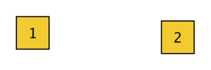
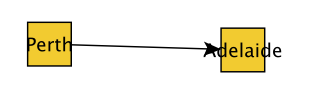
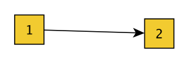
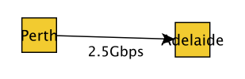

Basic Tutorial
- Download and open the yEd graph drawing program.
Nodes are added to the graph by clicking the mouse on the background.
The nodes can be named by selecting a node, pressing enter, and then typing in a name. Press enter again to store the name.
Edges can be added between two nodes by clicking the first node, holding down the mouse button, and releasing on the second node. This will draw a line between the nodes. (Do not worry about the arrows on the link, as the converter script will automatically make links bidirectional). 
Labels can also be added to edges in a similar manner to nodes. Select the edge, press enter, type in the label, and then press enter to store the label. 
Save the network in GML format, by File -> Save As, and selecting a File Format of GML Format (*.gml)
The saved GML format network contains yEd graphics metadata, as can be seen below:
Creator “yFiles”
Version “2.8”
graph
[
hierarchic 1
label “”
directed 1
node
[
id 0
label “Perth”
graphics
[
x 400.0
y 354.0
w 30.0
h 30.0
type “rectangle”
fill “#FFCC00”
outline “#000000”
]
LabelGraphics
[
text “Perth”
fontSize 13
fontName “Dialog”
anchor “c”
borderDistance 0.0
]
]
node
[
id 1
label “Adelaide”
graphics
[
x 533.0
y 358.0
w 30.0
h 30.0
type “rectangle”
fill “#FFCC00”
outline “#000000”
]
LabelGraphics
[
text “Adelaide”
fontSize 13
fontName “Dialog”
anchor “c”
borderDistance 0.0
]
]
edge
[
source 0
target 1
label “2.5Gbps”
graphics
[
fill “#000000”
targetArrow “standard”
]
LabelGraphics
[
text “2.5Gbps”
fontSize 12
fontName “Dialog”
model “six_pos”
position “tail”
]
]
]
We can use the convert.py script from the toolset to produce a GML graph suitable for inclusion in the Zoo. The -f command line option tells the script where to find the source GML file.
./merge.py -f ~/czoo/examples/tutorial/basic.gml
This will automatically create a new subdirectory called “merged”, and output the merged files into this directory. We now get clean GML
graph [
Version “1.0”
Creator “Topology Zoo Toolset”
label “basic”
node [
id 0
label “Perth”
]
node [
id 1
label “Adelaide”
]
edge [
source 0
target 1
LinkSpeed “2.5”
LinkSpeedUnits “G”
LinkLabel “2.5Gbps”
]
]
This example shows some other features of the convert script.
The network label has been set to the name of the file it was read from, nodes have their label set based on the yEd label, link speed has been extracted from the edge label, and the edge has also been made bidirectional.